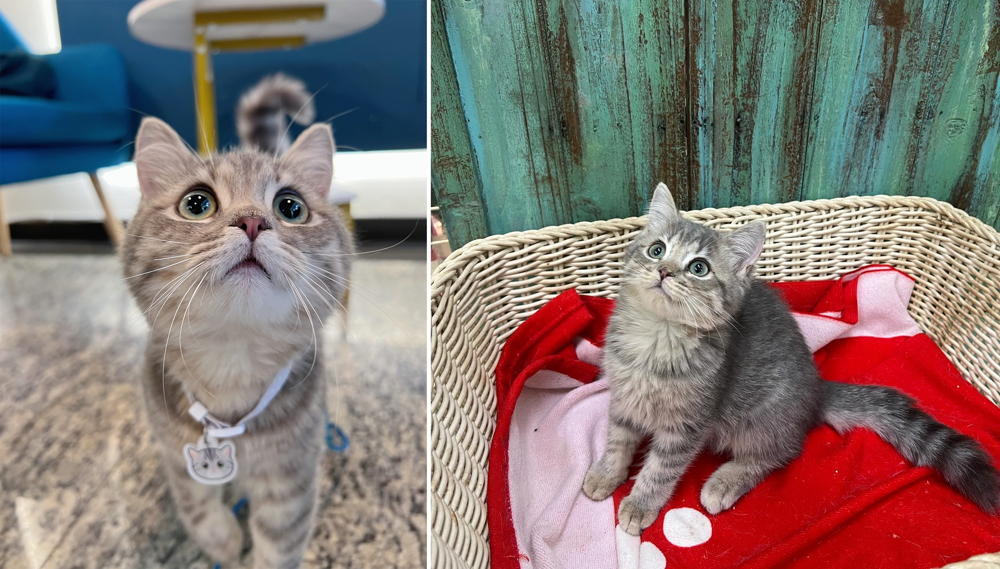

我一直很喜歡英國短毛貓。某天去桃園逛夜市時，剛好經過一間寵物店，看見裡面的貓咪都被照顧得很好，便忍不住進去參觀。店家原本採預約制，但當天恰好有客人取消，我才有機會進去。現在回想起來，若少了其中任何一個巧合，我可能就不會遇見 Sora。
當時我對養貓一竅不通，老闆卻很有耐心地介紹。得知我喜歡英國短毛貓後，他抱出一隻眼睛非常可愛的「小男生」。我第一眼就心動了，但想到養貓是一輩子的責任，還是決定回家冷靜考慮。
回家後，我在寵物店的 Instagram 上看到一隻特別喜歡的小貓，立刻截圖傳給老闆，沒想到老闆回答：「這就是當天抱給妳看的那隻啊！」原來讓我再次心動的，依然是第一眼喜歡上的牠。於是我不再猶豫，決定帶牠回家，並取名為 Sora。
 |
把 Sora 接回家的那一天，我原本已經做好心理準備，覺得小貓到了陌生環境，可能會害怕、躲起來。結果 Sora 完全不一樣！牠一到家就開始到處探索、不停玩耍，好像牠早就知道這裡是自己的家一樣。看著牠毫不客氣地跑來跑去，我一邊覺得好笑，一邊覺得牠真的可愛極了。
直到 Sora 長大一點，第一次帶牠看醫生時，發生了一件讓所有人都哭笑不得的大烏龍。因為小公貓小時候的蛋蛋可能還不太明顯，所以我問醫生：「請問 Sora 的蛋蛋什麼時候才會掉下來？」
醫生聽完之後，低頭仔細檢查了一下，沉默了幾秒，接著用有點猶豫的語氣對我說：「嗯……我覺得 Sora 應該是女孩子喔！」
我當場嚇到，立刻回答：「什麼？怎麼可能！Sora 明明是男生啊！」
為了慎重起見，另一位醫生也過來重新檢查一次。沒想到第二位醫生看完後，同樣告訴我：「我也覺得牠是女孩子。」
我整個人都傻住了，立刻打電話給寵物店老闆，告訴他 Sora 可能其實是女生。老闆聽完也非常不可置信，於是我當天馬上帶著 Sora「殺回」桃園，請老闆親自確認。
老闆仔細檢查之後，終於忍不住說：「唉唷！真的是女生耶！」
我聽完真的快笑死了！老闆告訴我，Sora 是他從業二十年以來，第二隻被判斷錯性別的小貓。因為剛出生的小貓生殖器官還不明顯，再加上 Sora 小時候的臉非常圓，看起來很像小男生，而且個性又特別活潑、調皮，大家才會一直以為牠是公貓。沒想到我們就這樣把一個小女生，當成小男生養了一段時間，甚至還很認真地等待她的蛋蛋「掉下來」！
雖然這場性別大烏龍讓我笑了很久，但其實不管 Sora 是男生還是女生，我都一樣愛她。對我而言，她早就不只是一隻我一直很想養的英國短毛貓，而是我的家人，也是命運在那一天安排給我的珍貴禮物。